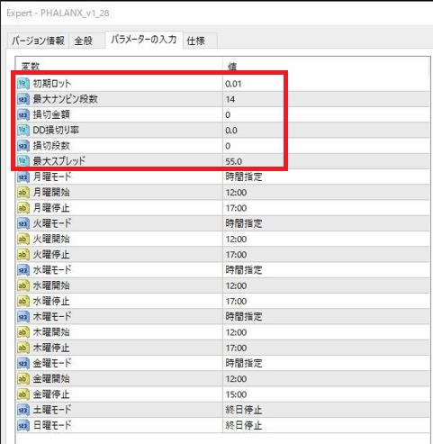

各設定項目の内容と役割をまとめています。
設定を変更する際は、必ずこちらをご確認ください。
このページはPHALANX v1.28の設定ガイドです。口座タイプに合わせて初期ロットを必ず確認してください。
認証失敗中は新規・追加注文を停止し、保有中ポジションの管理と決済を継続します。

「パラメーターの入力」タブの一番上にある「初期ロット」の値を変更します。
スタンダード口座：資金100万円／初期0.01 lot
マイクロ口座：資金10万円／初期0.10 lot（基本基準）、初期0.03 lot（慎重な運用向け）
ロット倍率1.5／最大14段。認証にはMT4全体とEA個別のDLL許可が必要です。WebRequest URL登録は不要です。